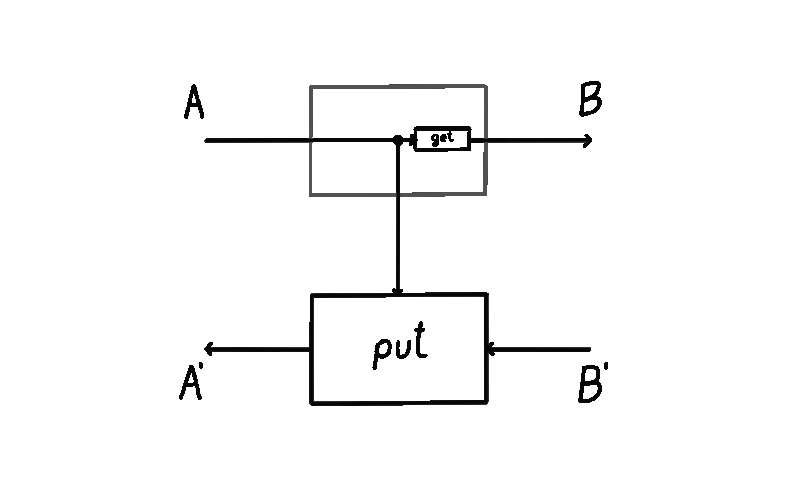
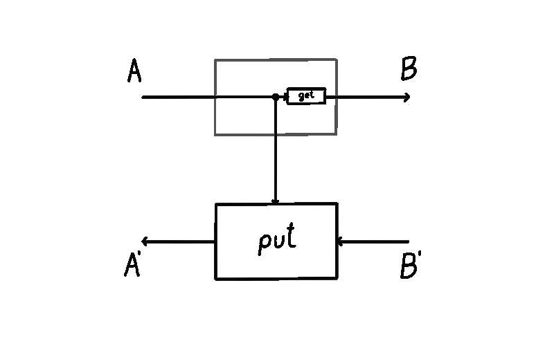

Optics vs Lenses, Operationally
(Update: I’ve given a talk about this blog post, which can be found here.)
I’ve been thinking a lot about lenses and optics. They’re both abstract gadgets that model various sorts of bidirectional processes. They are found in machine learning, game theory, database systems, and so on. While optics are more general, it’s understood that they’re equivalent to lenses in the special case of a cartesian monoidal category  . In this blog post I’ll explain how this equivalence is denotational in nature, and the result of erasure of important operational data. Even more, sometimes it’s said that lenses are something we can simplify optics to. I’ll try to convey how this is misleading – concrete lenses don’t reduce any complexity; they just shove it under the rug.
. In this blog post I’ll explain how this equivalence is denotational in nature, and the result of erasure of important operational data. Even more, sometimes it’s said that lenses are something we can simplify optics to. I’ll try to convey how this is misleading – concrete lenses don’t reduce any complexity; they just shove it under the rug.
Let’s see what that means.
Lenses are optics with one choice removed
A lens  is usually presented of as a pair of maps
is usually presented of as a pair of maps  and
and  , thought of as the forward and backward map.1
, thought of as the forward and backward map.1
 

We can imagine a particle flowing in this lens, starting from the input of type  . A lens takes in this input and produces two things: a copy of it (sent down the vertical wire, where the operation of copying is drawn as a black dot) and the output
. A lens takes in this input and produces two things: a copy of it (sent down the vertical wire, where the operation of copying is drawn as a black dot) and the output  (via the
(via the  map). This is the forward pass of the lens. Then, this output
map). This is the forward pass of the lens. Then, this output  is turned into a “response”
is turned into a “response”  by the environment (not drawn). This lands us in the backward pass of the lens, where it consumes two things: the response
by the environment (not drawn). This lands us in the backward pass of the lens, where it consumes two things: the response  and the previously saved copy of the input on the vertical wire, turning them back into
and the previously saved copy of the input on the vertical wire, turning them back into  .
.
A lens has an inside and an outside. The outside are the ports  and
and  . These ports are the interface to which other lenses connect. The inside is the vertical wire whose type is
. These ports are the interface to which other lenses connect. The inside is the vertical wire whose type is  . The vertical wire is the internal state of the lens (sometimes also called the residual) - mediating the transition between the forward and the backward pass.
. The vertical wire is the internal state of the lens (sometimes also called the residual) - mediating the transition between the forward and the backward pass.

In the lens literature, the notion of residual / internal state has not been reified. That is, when you define a lens, the type of the internal state / residual is something you have no control over. No matter what  and
and  map you write, the internal state will always be of the same type as the domain of
map you write, the internal state will always be of the same type as the domain of  . What flows through the internal state really won’t be any different than what flows in through the top-left input of the lens. This is important, so I’ll bold it.
. What flows through the internal state really won’t be any different than what flows in through the top-left input of the lens. This is important, so I’ll bold it.
With optics you’re in control. The internal state is explicit data that can be manipulated at will, and doesn’t necessarily have to equal the top-left input. That is,
Let’s have a closer look. An optic  is defined by three things. We need to pick a type
is defined by three things. We need to pick a type  for the internal state, the forward map
for the internal state, the forward map  , and the backward map
, and the backward map  . This is in contrast to a lens which was defined by two things (maps
. This is in contrast to a lens which was defined by two things (maps  and
and  ).
).

In the image above we see that there’s no  map anymore, it’s been abstracted away. We’re also free not to copy the input
map anymore, it’s been abstracted away. We’re also free not to copy the input  down the vertical wire. But we can if we want to. We get lenses as special cases of optics by setting
down the vertical wire. But we can if we want to. We get lenses as special cases of optics by setting  ,
,  2, and
2, and  . We can also do more things. If our category is closed, we can form linear lenses. By setting the internal state to be a function space
. We can also do more things. If our category is closed, we can form linear lenses. By setting the internal state to be a function space  , the necessary type of forward map becomes
, the necessary type of forward map becomes  . This is precisely the type of any linear lens. The type of backward map becomes
. This is precisely the type of any linear lens. The type of backward map becomes  for which we have a canonical term - the map
for which we have a canonical term - the map  .
.
Unlike with lenses, the type of the residual  is hidden from the environment. The environment has no way of knowing what kind of internal computation the optic is performing. All the environment can interact with are the ports
is hidden from the environment. The environment has no way of knowing what kind of internal computation the optic is performing. All the environment can interact with are the ports  ,
,  . I think of it like a black-box system: we can still interact with the system from the outside through an interface, but there are wires inside the system that we can’t access.
. I think of it like a black-box system: we can still interact with the system from the outside through an interface, but there are wires inside the system that we can’t access.
Now, you might say - why does the choice of the residual matter? If residual is the internal state I don’t have access to, how does it impact me? No matter what residual and optic I choose, if I’m in a cartesian monoidal category, there’s going to be a lens that it’s equivalent to, and I can work with that lens. And you’d be right! I even animated this process:

However, this is only correct denotationally. Operationally, there’s a world of difference. This can most readily be seen by studying how lenses and optics compose.
Lenses trade simplicity of presentation for complexity of composition
Lenses have a different composition rule than optics. Even though these categories are equivalent, it took me a long time to realise the importance of this.
Let’s see how two lenses compose. Suppose we have two lenses  and
and  , shown below.
, shown below.

How do we form the composite lens  ? We just plug them together like shown below, right?
? We just plug them together like shown below, right?

Wrong! What’s drawn above isn’t a lens. Can you spot why? It certainly looks like it should work – it’s simple and elegant. But it’s not a lens. The problem is that the residual  isn’t equal to the top-left input
isn’t equal to the top-left input  , which is what a lens requires. Another way to see this is to realise that this lens is of type
, which is what a lens requires. Another way to see this is to realise that this lens is of type  - what are its
- what are its  and
and  maps?
maps?
Let’s define these  and
and  maps (forgetting the above image for a moment). The
maps (forgetting the above image for a moment). The  is easy to define - it’s just the composite
is easy to define - it’s just the composite  . But here comes trouble. The
. But here comes trouble. The  map is more complex. It’s defined as the composite
map is more complex. It’s defined as the composite
What happens here is that input  to
to  is first copied. Then we use one of the copies to obtain a
is first copied. Then we use one of the copies to obtain a  , which we use in
, which we use in  . The map
. The map  gives us a
gives us a  , and then we use
, and then we use  , and the other copy of
, and the other copy of  to obtain
to obtain  . If you think about it, you’ll see that this is the only way we could’ve defined it. Let’s draw the result:
. If you think about it, you’ll see that this is the only way we could’ve defined it. Let’s draw the result:

This might look a bit strange. It’s different than our original guess, but this really is lens composition. You can convince yourself by tracing out what the grayed out  map does and seeing that it’s the same thing as the equation defined above. We can immediately notice some peculiarities. There’s two
map does and seeing that it’s the same thing as the equation defined above. We can immediately notice some peculiarities. There’s two  maps. The input
maps. The input  is copied twice, not once. To get a better sense of what’s going on, let’s up the stakes. Here’s a composition of three lenses:
is copied twice, not once. To get a better sense of what’s going on, let’s up the stakes. Here’s a composition of three lenses:

Well, that’s starting to look crowded. There’s 6  maps now. We’re also copying
maps now. We’re also copying  three times in total. What’s going on? It looks like composing lenses duplicates one of the
three times in total. What’s going on? It looks like composing lenses duplicates one of the  maps (which in this case was itself a composite). This is really inefficient. If we were to use lenses composition in a software project, say for automatic differentiation is some neural network library where layers have millions of parameters - we’d get horrendous performance. In a neural network with
maps (which in this case was itself a composite). This is really inefficient. If we were to use lenses composition in a software project, say for automatic differentiation is some neural network library where layers have millions of parameters - we’d get horrendous performance. In a neural network with  layers, the first one would get recomputed
layers, the first one would get recomputed  times. The second one
times. The second one  times, and so on.3 What’s going on? Why is there so much duplication?
times, and so on.3 What’s going on? Why is there so much duplication?
All of this happens because of the restriction on the type of the residual in a lens. It can’t be anything other than  , and this prevents the forward pass from sending the result of
, and this prevents the forward pass from sending the result of  computation to the backward pass (which is needed as an input to
computation to the backward pass (which is needed as an input to  ). The backward pass instead needs to redo the work of
). The backward pass instead needs to redo the work of  from the forward pass, and apply it again to
from the forward pass, and apply it again to  . In other words, we’re computing some things in the forward pass, but the lenses prevent us from using that result in backward pass. The abstraction we chose is working against us. This is bad!
. In other words, we’re computing some things in the forward pass, but the lenses prevent us from using that result in backward pass. The abstraction we chose is working against us. This is bad!
Ideally, we’d like to reuse the answer that  computed for
computed for  , reuse the answer that
, reuse the answer that  computed for
computed for  , and so on. And if we think about it, we realise that this is exactly what our original guess was. Did we absentmindedly create a better answer than what’s in the literature? It turns out that we didn’t discover it - it was already known as optic composition.
, and so on. And if we think about it, we realise that this is exactly what our original guess was. Did we absentmindedly create a better answer than what’s in the literature? It turns out that we didn’t discover it - it was already known as optic composition.
Optic composition (drawn again above) gives us a natural way to compose these bidirectional gadgets. This composite is an optic of type  where the residual is
where the residual is  , the forward map is the composite
, the forward map is the composite
and the backward map is the composite
Really, writing things down with equations makes them look more complicated than they are - we’re simply plugging two boxes side by side, and reading off what we ended up with:

We can notice a few things. There’s no duplication of  maps – everything gets computed exactly once. There’s no need to squeeze anything through the
maps – everything gets computed exactly once. There’s no need to squeeze anything through the  -shaped internal state – we have the freedom of choosing the type of internal state we need. And the complexity of optic composition is kept at bay – composing optics in sequence causes the residuals to be composed in parallel.
-shaped internal state – we have the freedom of choosing the type of internal state we need. And the complexity of optic composition is kept at bay – composing optics in sequence causes the residuals to be composed in parallel.
This gives us lots of expressive power, since a complex composition of optics can have a residual that supports this complexity. With lenses the situation is different: we’re fixing a global choice of the residual. And this particular global choice necessitates a specific kind of a composite lens that is always less efficient than its optic counterpart. This is the lens complexity that’s shoved under the rug: lenses seem simpler up-front, but exhibit hidden inefficiencies when you compose them.
In the next section I’ll show how we can model these operational aspects using (2-)category theory.
Residual reification is left adjoint to residual erasure
This is a short and a relatively technical remark. The well-known isomorphism of hom-sets  (as defined in Proposition 2.0.4. in Categories of Optics) can be weakened into an adjunction. This is because the category
(as defined in Proposition 2.0.4. in Categories of Optics) can be weakened into an adjunction. This is because the category  should really be thought of as a 2-category. This 2-category is not anything new, and is already hidden in the plain sight: in the definition of the 1-category of optics.
should really be thought of as a 2-category. This 2-category is not anything new, and is already hidden in the plain sight: in the definition of the 1-category of optics.
Let’s unpack it. This 2-category is going to have the same objects as its one-dimensional counterpart. But morphisms will be slightly different. Recall that a morphism in the 1-category  is an equivalence class. Which equivalence class? The one that identifies optics
is an equivalence class. Which equivalence class? The one that identifies optics  and
and  to be the same if there is a reparameterisation
to be the same if there is a reparameterisation  satisfying some rules. In our 2-category a morphism will be just the triple
satisfying some rules. In our 2-category a morphism will be just the triple  without any quotienting. And a 2-cell is going to be the said reparameterisation, satisfying the same rules. When defined this way, the job of identifying two optics is left to the higher categorical structure in a natural way. That is, we say two optics are equivalent if there’s an isomorphism
without any quotienting. And a 2-cell is going to be the said reparameterisation, satisfying the same rules. When defined this way, the job of identifying two optics is left to the higher categorical structure in a natural way. That is, we say two optics are equivalent if there’s an isomorphism  , i.e. two reparameterisations going there and back forming an isomorphism. Compared to the 1-categorical version, we see that we have directionality: having a reparameterisation between two optics doesn’t necessarily mean they’re equivalent. That was the artefact of the need to squish the 2-category down into a 1-category, which is something we don’t want to do. We want to have more expressive power, not less. And interestingly, we’ve already seen an optic 2-cell - it was the animation at the end of the first section.
, i.e. two reparameterisations going there and back forming an isomorphism. Compared to the 1-categorical version, we see that we have directionality: having a reparameterisation between two optics doesn’t necessarily mean they’re equivalent. That was the artefact of the need to squish the 2-category down into a 1-category, which is something we don’t want to do. We want to have more expressive power, not less. And interestingly, we’ve already seen an optic 2-cell - it was the animation at the end of the first section.
Turning  into a 2-category means its hom-sets are now hom-categories, and we can go back to studying the adjunction.4 What are the functors involved?
into a 2-category means its hom-sets are now hom-categories, and we can go back to studying the adjunction.4 What are the functors involved?
The functor  is the right adjoint. It takes an optic
is the right adjoint. It takes an optic  and creates a lens
and creates a lens  by forgetting the residual. The left adjoint
by forgetting the residual. The left adjoint  goes the other way and reifies the residual of a lens
goes the other way and reifies the residual of a lens  , creating an optic
, creating an optic  .
.
If we do a roundtrip  , starting from the optic
, starting from the optic  we turn that optic into its lens form
we turn that optic into its lens form  . But this technically isn’t the same optic we started with - there’s a 2-cell from the latter to the former which is the counit of this adjunction. Proving this takes some work, but this is the main idea. It tells us that erasing the residual is a functor that has a left adjoint – the one that reifies this notion of a residual in a canonical way.
. But this technically isn’t the same optic we started with - there’s a 2-cell from the latter to the former which is the counit of this adjunction. Proving this takes some work, but this is the main idea. It tells us that erasing the residual is a functor that has a left adjoint – the one that reifies this notion of a residual in a canonical way.

The story goes deeper. Previously I referred to the equivalence of categories  . This equivalence is denotational, and doesn’t see the operational aspects we talked about. But these operational aspects start to be visible categorically after we turn optics into a 2-category. We no longer have an equivalence of categories, and we no longer have a functor
. This equivalence is denotational, and doesn’t see the operational aspects we talked about. But these operational aspects start to be visible categorically after we turn optics into a 2-category. We no longer have an equivalence of categories, and we no longer have a functor  . Instead, we have an oplax functor
. Instead, we have an oplax functor  . This oplax functor captures the idea that lenses compose differently than optics. The oplax structure tells us that composing two lenses and turning the result into an optic does not give us the same result as turning these two lenses individually into optics, and then composing the result.
. This oplax functor captures the idea that lenses compose differently than optics. The oplax structure tells us that composing two lenses and turning the result into an optic does not give us the same result as turning these two lenses individually into optics, and then composing the result.
This is a striking result, but it’s for another time.
Conclusion
Bidirectional processes are all around us. They embody essential notions of what it means to be an agent in a world: to act, receive feedback, and update ourselves. Even though we often model these processes as black-box systems, a lot of practical considerations depend on their internals. It is therefore paramount to have expressive models that allow us to describe all the nuances we need.
By modelling these systems with lenses we relinquish our ability to model those internals. This doesn’t mean the internal state isn’t there – it’s there, and it still affects what we do. We just lack the conceptual tools to talk about it.
With optics we get these conceptual tools. We get the expressive power to describe this internal state, and say what happens to it as we compose optics in various ways. In a way, by using optics we didn’t really add any complexity – we just distilled what was already there, and gave it a name. This is the idea behind a lot of category theory too – to distill what is already there, and give it a name.
Some more ponderings:
- Everything described here for lenses applies to all coend optics: prisms, affine traversals, grates, and so on. It would be interesting to unpack the operational aspect of each one.
- What I described here applies to cartesian lenses. It would be interesting to understand how the story changes when applied to dependent lenses. Of course, understanding what dependent optics are is an open research question, and the topic of our recent arXiv preprint.
Thanks to Matteo Capucci for insightful conversations and help in checking technical details, and Ieva Čepaitė for a read-through of this post.
This is the concrete presentation of a lens. There’s a few more encodings (such as the van Laarhoven encoding), but they’re not the focus of this blog post.↩
The first symbol is the copy map
![\Delta_A : A \to A \times A]() which duplicates the input (drawn as a black dot in the diagrams). I’m using
which duplicates the input (drawn as a black dot in the diagrams). I’m using  to denote diagrammatic composition, i.e.
to denote diagrammatic composition, i.e. ![f;g = g \circ f]() . And when I write
. And when I write  on an arrow, this means I’m talking about the identity morphism
on an arrow, this means I’m talking about the identity morphism ![id_A : A \to A]() .↩
.↩This is precisely what Conal Elliott noticed in Simple Essence of Automatic Differentiation. He noticed that standard lens composition duplicates data, and is horribly inefficient. He then proposes a switch to linear lenses, which are just another example of an optic. It’s interesting to note that he doesn’t use the terminology of lenses or optics at all, but this is essentially what a part of his paper is about.↩
We consider
![\mathbf{Lens}(\mathcal{C})]() as a 2-category too, but the trivial one which only has identity 2-cells.↩
as a 2-category too, but the trivial one which only has identity 2-cells.↩